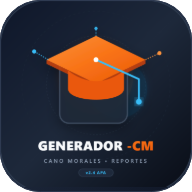

No conectado
Desarrollado por Jorge Javier Pedrozo Romero
Modificado por Argel Alberto Cano Morales
v2.4.1 • Octubre 2026
Términos y condiciones · Política de privacidad
Selecciona tu institución y comienza agregando bloques desde el menú lateral.